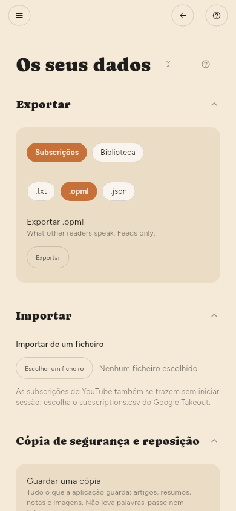

← Referência da configuração · Índice
Onde ficam as coisas
A sua biblioteca é um único ficheiro SQLite na pasta de dados da aplicação. Fazer uma cópia de segurança desse ficheiro guarda tudo: artigos, resumos, destaques e o que já leu. Configuração › Avançado › Os seus dados › Cópia de segurança e reposição faz a mesma cópia num único ficheiro, sem ter de procurar a pasta.
